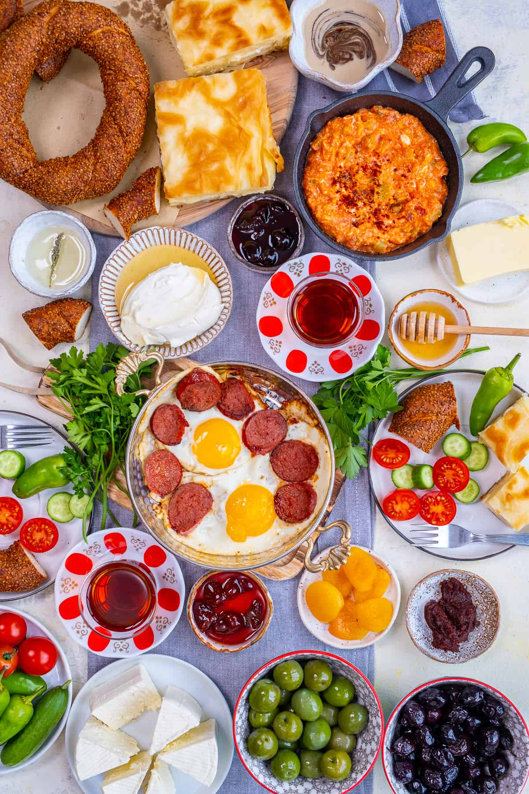

Istanbul, historically known as Byzantium and later as Constantinople, boasts a rich tapestry of history that has shaped both European and Asian civilizations for over two millennia. Strategically nestled on the Bosphorus Strait, it uniquely straddles two continents: Europe and Asia. This geographical advantage has rendered Istanbul a nexus of trade, culture, and power, serving as the capital for the Roman, Byzantine, Latin, and Ottoman Empires. Its mosaic of Christian and Islamic influences, manifested in architectural wonders such as the Hagia Sophia and the Blue Mosque, bears witness to the city's multifaceted past. As the bridge between Europe and Asia, Istanbul has perpetually been a melting pot of ideas, religions, and peoples, establishing it as one of the world's most enduring and captivating metropolises.

Istanbul, a city that has stood at the crossroads of history for millennia, is replete with architectural marvels that testify to its storied past. Among its historic structures, the city's fortifications and castles stand as silent witnesses to its strategic importance. The Walls of Constantinople, an ancient defensive barrier, played a pivotal role in safeguarding the city for centuries from various sieges. Further emphasizing the city's military significance, the Anatolian Castle and Rumelian Castle were constructed on opposing shores of the Bosphorus, allowing the Ottomans to effectively control this crucial waterway. Meanwhile, soaring above the city's undulating profile is the Galata Tower. Originally constructed by the Genoese in 1348, this medieval stone tower offers panoramic vistas of the old city and its surrounding waterways. Together, these structures, alongside countless others, form the architectural tapestry of Istanbul, narrating tales of empires risen and fallen, of battles won and lost, and of a city that has forever been the nexus of the world's great civilizations.

Istanbul's religious history is a rich tapestry interwoven with diverse spiritual traditions, notably shaped by its Christian and Islamic epochs. Originally founded as Byzantium, the city became a bastion of Christianity when Emperor Constantine, after whom it was renamed Constantinople, declared Christianity as the Roman Empire's official religion in the 4th century. For nearly a millennium, the Hagia Sophia stood as the grandest cathedral in the Christian world. However, with the Ottoman conquest of Constantinople in 1453, led by Sultan Mehmed II, a profound shift occurred. The city, now named Istanbul, began its transformation into an Islamic hub. The Hagia Sophia was converted into a mosque, setting a precedent for the city's architectural future. Over subsequent centuries, a constellation of mosques graced Istanbul's skyline, including masterpieces like the Blue Mosque and the Süleymaniye Mosque, reflecting the artistic zenith of Ottoman Islamic architecture. These mosques, with their iconic minarets piercing the heavens, not only symbolize Istanbul's religious evolution but also its enduring spirit of cultural synthesis.
Istanbul's cuisine is a gastronomic odyssey, echoing the city's rich history as a confluence of cultures and civilizations. The food of Istanbul is characterized by a delightful blend of Middle Eastern, Central Asian, Balkan, and Mediterranean flavors, reflecting the diverse influences brought together by the Ottoman Empire. One of the most cherished traditions in this culinary landscape is the Turkish breakfast, or "kahvaltı." Unlike any other, a typical kahvaltı is a lavish spread that often includes a variety of cheeses, olives, tomatoes, cucumbers, jams, honey, and kaymak (a creamy dairy product). Freshly baked breads like "simit" (a sesame-encrusted bread ring) and "pide" complement these staples. To round off the meal, eggs prepared in various ways, especially "menemen" – a spicy scramble with tomatoes and green peppers – are enjoyed. And, of course, no Turkish breakfast is complete without the ritual of sipping on strong, aromatic tea served in slender, tulip-shaped glasses. In Istanbul, this morning feast not only satiates the appetite but also offers a moment of connection, a tradition deeply rooted in the city's social fabric.